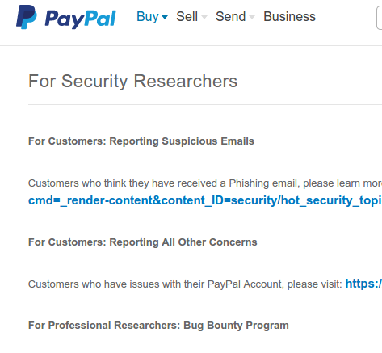

Auditando aplicaciones a gran escala
Lecciones aprendidas en VRP*
*Vulnerability Reward Programs
Charla rápida - Contenidos
- VRPs
- Enfoque
- Ejemplo práctico: auditando Google
$ whoami | grep VRP
- Seguridad de aplicaciones (Web+Mobile)
- VRPs
- 8 x Google
- 3 x Yandex
- n x SynAck
- 1 x (Facebook + Yahoo + Mozilla + Reddit + CloudFlare + Mozilla + Pocket + Xmarks)
- 0 x (Paypal + Etsy + Twitter...)
Disclaimer
VRP a.k.a
vulnerability reward programs / bug bounties / crowdsourced security assessments / vulnerability management programs / responsible disclosure
básicamente se resumen en...
VRPs: Funcionamiento
Descubrimos un fallo de seguridad
Lo reportamos de manera responsable
Recibimos una recompensa
Razones para participar
Mejorar habilidades
Acceso a probar entornos de producción reales
Posible recompensa (no siempre económica)
Razones para NO participar
Por dinero
Por fama
Frustración
¿Cómo participar?
Requisitos
1. Saber leer

Reglas
Write-Ups
Alcance real
sabías que...
keyhole.com ∈ Google's VRP ?
¡Pero ojo!
7 Sept 2012 - Google compra Virustotal.com
13 Feb 2013 - XSS reportado (5 meses y 6 días después)
13 Feb 2013 - XSS reportado (5 meses y 6 días después)
Requisitos
1. Saber leer
2. Saber escribir
La importancia de escribir una PoC
Ayuda a identificar falsos positivos / fallos sin utilidad
Facilita el trabajo al revisor
Acerca los distintos análisis de riesgos
Charla rápida - Contenidos
-
VRPs - Enfoque
- Ejemplo práctico: auditando Google
Tenemos...
- Un conjunto indeterminado de aplicaciones para probar
- Un conjunto de posibles fallos a encontrar dentro del alcance
Dos enfoques
VSFallos graves
XSS, SQLi, Auth Bypass, Priv esc, RCE... y fallos simples en dominios sensibles (e.g., accounts.google.com)
Ventajas
Inconvenientes
 Fallos menos graves
Fallos menos graves
Mixed content, TLS downgrade, Clickjacking, Open redirections, Info leak...
Ventajas
Inconvenientes
La mayor ventaja...
Detección sencilla y pasiva = Automatizable
Pero...
...las pruebas manuales siempre son mejores
Charla rápida - Contenidos
-
VRPs -
Enfoque - Ejemplo práctico: auditando Google
Problemática
Superficie de ataque inmensa
¿Cómo llegar el primero?
Solución: un crawler
 3 recursos a tener en cuenta
3 recursos a tener en cuenta
Lee, H.-T.; Leonard, D.; Wang, X. & Loguinov, D. (2008), IRLbot: scaling to 6 billion pages and beyond.
Trade-Off between
Trade-Off between
- scalability - algorithms and data structures complexity
- performance - discovering pages at a good rate
- resource usage - CPU & RAM
Características de nuestro crawler
- Educado - limita reqs/s
- Rápido: diversifica objetivos sin renunciar a ser rápido
- Da preferencia a URLs "raras"
- Pasivo - no realiza pruebas activas (no XSS, SQLi...)
- RAM - *intenta* ser ligero
Educación (req/s)
Asignamos un presupuesto (B) de peticiones por unidad de tiempo diferente por IP, hostname y subred:
B IP < B hostname < B subred /24
Rápido
Una cola de prioridad por cada hostname (aplicación)Comprobación Round Robin de presupuesto para cada hostname
¿Cómo priorizamos URLs "raras"?
Algoritmos Breadth-first y Depth-first no funcionan bien:
https://plus.google.com/+MartinObiols/posts
http://www.youtube.com/user/rihanna
https://code.google.com/p/gmapcatcher/
http://www.youtube.com/user/rihanna
https://code.google.com/p/gmapcatcher/
También hay agujeros negros:
https://maps.google.com/maps/myplaces?hl=es-ES
https://maps.google.com/maps/myplaces?hl=en-US
https://maps.google.com/maps/myplaces?hl=de-DE
https://maps.google.com/maps/myplaces?hl=en-US
https://maps.google.com/maps/myplaces?hl=de-DE
Posible solución: URL como grafo
http://dominio.com/dir1/script1?param1=val1¶m2=val2Calculamos prioridad como:
P = N dir1 + N script1 + N param1 + N param2
- Se experimenta con diferentes fórmulas
- Se añaden checks para limitar variaciones y loops
Detección pasiva
- Hostnames para alcance dado (e.g., *.google.com)
- URLs con datos sensibles en el body (email, teléfono...)
- URLs con alguno de los siguientes:
- Mixed Content, Cabeceras poco usuales, Mensajes de error, Prefijos conocidos en B64 (http:// = aHR0cA==)
- CORS laxas (Access-Control-Allow-Origin: *)
- No X-Frame-Options
- JSONP
- Cross-Server Script Includes
Algunos resultados...
HTTP Response Splitting + XSS
Descubrimos un redirector privado expuesto. Usando %08 (backspace) eliminamos cabecera Location
http://goto.ext.google.com/%08%0a%0a%0a<script> prompt(document.domain);</script>%0aSet-Cookie:%20brau=5
HTTP/1.1 301 Moved Permanently Date: Thu, 20 Dec 2012 16:42:17 GMT Content-Type: text/html Server: Google Frontend Content-Length: 70 <script>prompt(document.domain);</script> Set-Cookie: brau=5 Content-Length: 0
Clickjacking @ accounts.google.com
Alguien se dejó un formulario con autocomplete sin X-Frame-Optionshttps://accounts.google.com/NewAccount?service=friendview
Pero...
DOM XSS @ keyhole.com
Online demo para Google Earth enterprise:http://gmdemo.keyhole.com
Lo importante no es el XSS, sino el dominio (Req #1: Saber Leer)
TLS downgrade en contactos de Gmail
URL con datos sensibles (libro de direcciones):https://mail.google.com/mail/c/u/0/data/contactstore
¿Y si quitamos la "s"?
HTTP/1.1 200 OK
Cache-Control: no-cache, no-store, max-age=0, must-revalidate
Pragma: no-cache
Expires: Fri, 01 Jan 1990 00:00:00 GMT
Date: Wed, 31 Jul 2013 06:43:03 GMT
Content-Type: application/x-javascript; charset=utf-8
X-Content-Type-Options: nosniff
X-Frame-Options: SAMEORIGIN
X-XSS-Protection: 1; mode=block
Server: GSE
Content-Length: 1519
while (true); &&&START&&&{"Succ, [...] ,\"Obama\",,\"Obama\",,,,0]\n]\n,[,,[[,,2,,\"obama@obama.com\" [...] ","AuthToken":{"Value":"IkLqQkABAAA.UDt2IWu30L46xxeej5FrMw.jBP9RG5b4UrE71vZCiy5jA"}}} &&&END&&&
Lecciones aprendidas
- Programar un crawler es difícil
- La mayoría de crawlers no están pensados para nadar en el mar, son más de piscinas
- Una simple detección pasiva puede ayudar mucho
- Buscar ratones es más rentable a largo plazo que buscar elefantes
Fin
Icons made by Freepik from www.flaticon.com and licensed by CC BY 3.0